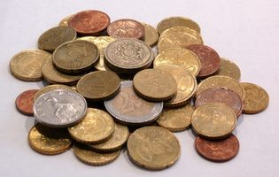

Para efeitos da nota atribuída à resolução de exercícios ao longo do semestre - Submeter até 23:59 de 1 de Maio
(o problema continuará depois disponível para submissão, mas sem contar para a nota)
[para perceber o contexto do problema deve ler o guião da aula #05]
Em Algoland todos os habitantes sabem usar algoritmos avançados. Não é por isso de espantar que tivessem escolhido um sistema de moedas cuidadosamente preparado ser diferente do habitual. De facto, o típico algoritmo greedy de ir escolher sempre a maior moeda ainda inferior ou igual à quantia restante não funciona por lá, e os seus habitantes divertem-se ao ver a dificuldade que os visitantes têm em conseguir perceber que moedas devem usar quando fazem pagamentos.
O Aniceto vai visitar um amigo em Algoland e já decidiu que não quer passar nenhuma vergonha. Ele sabe exactamente que moedas existem e as compras que vai fazer, e como pode trocar dinheiro antes de ir, consegue sempre ter moedas em quantidade suficiente. A maior dificuldade dele é saber o mínimo número de moedas para fazer as quantias de cada compra, sendo que pode repetir quantas vezes quiser a mesma quantia de moeda.
Imagina por exemplo que em Algoland existem as moedas de 1, 5, 8 e 11 cêntimos. Se o Aniceto quisesse fazer a quantia de 13 cêntimos bastavam duas moedas (5+8). Já para fazer 20 eram precisas 3 (1+8+11). Por seu lado, uma quantia como 51 já necessitava de 6 moedas (5+5+8+11+11+11).
O Aniceto já está com uma grande dor de cabeça de tantas contas que está a fazer e por isso precisa de ajuda...
Escreva um programa que dado um conjunto de N moedas e uma série de P perguntas, cada uma indicando uma quantia Qi, indique qual o menor número de moedas necessário para fazer cada quantia, e quais as moedas a usar em cada caso.
Pode assumir que todas as quantias são possíveis de fazer e que tem uma quantidade "infinita" de cada moeda, ou seja que para fazer o mínimo pode repetir qualquer valor de moeda tantas vezes quanto o necessário.
Na primeira linha vem um número N, indicando o número de tipos de moedas em Algoland. Na segunda linha vêm N inteiros Ti, indicando quais os valores de cada tipo de moeda. Pode assumir que as moedas vêm por ordem crescente.
Na terceira linha vem um único inteiro P indicando o número de perguntas a considerar. Nas P linhas seguintes vêm as perguntas em si, cada uma com um inteiro Qi indicando a quantia para a qual se quer minimizar o número de moedas a usar.
P linhas, cada uma com a resposta da pergunta respectiva. Cada linha deve vir no formato "Qi: [MIN] M1 M2 ... MMIN", onde MIN é o número mínimo de moedas a usar para fazer a quantia Qi e M1 M2 ... MMIN são as MIN moedas a usar para fazer a quantia.
As moedas devem vir por ordem crescente (M1 ≤ M2 ≤ ... ≤ MMIN). Como podem existir várias maneiras diferentes (e mínimas) de fazer cada quantia, deve escrever aquela que use a mais pequena moeda M1; em caso de empate a que use a mais pequena M2 e por aí adiante.
São garantidos os seguintes limites em todos os casos de teste que irão ser colocados ao programa:
| 1 ≤ N ≤ 100 | Quantidade de tipos de moedas | |
| 1 ≤ Ti ≤ 10 000 | Valor de cada tipo de moeda | |
| 1 ≤ Pi ≤ 100 | Quantidade de perguntas | |
| 1 ≤ Q ≤ 10 000 | Quantia para a qual se quer minimizar o número de moedas a usar |
4 1 5 8 11 6 13 20 51 19 98 42
13: [2] 5 8 20: [3] 1 8 11 51: [6] 5 5 8 11 11 11 19: [2] 8 11 98: [10] 5 5 11 11 11 11 11 11 11 11 42: [5] 1 8 11 11 11
O exemplo de input corresponde ao conjunto de tipos de moedas descrito no enunciado: 1, 5, 8 e 11 cêntimos.
Desenho e Análise de Algoritmos (CC2001)
DCC/FCUP - Faculdade de Ciências da Universidade do Porto